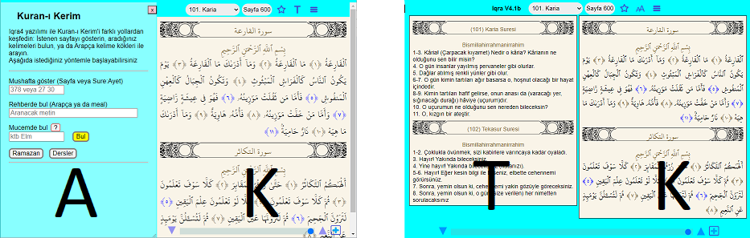
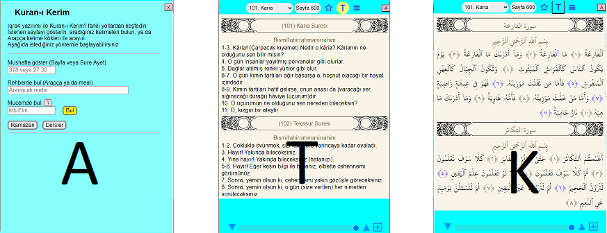

Wide screen needs no transition between panels
We want the verses to be accessible from various search/presentation methods
A: Access, T: Translation, K: Quran
Wide screen needs no transition between panels

Tablet mode is tricky -- we need intuitive transitions

Phone: Horizontal swipe and yellow buttons